Big cat facts: lions, tigers, leopards, jaguars, cheetahs and snow leopards
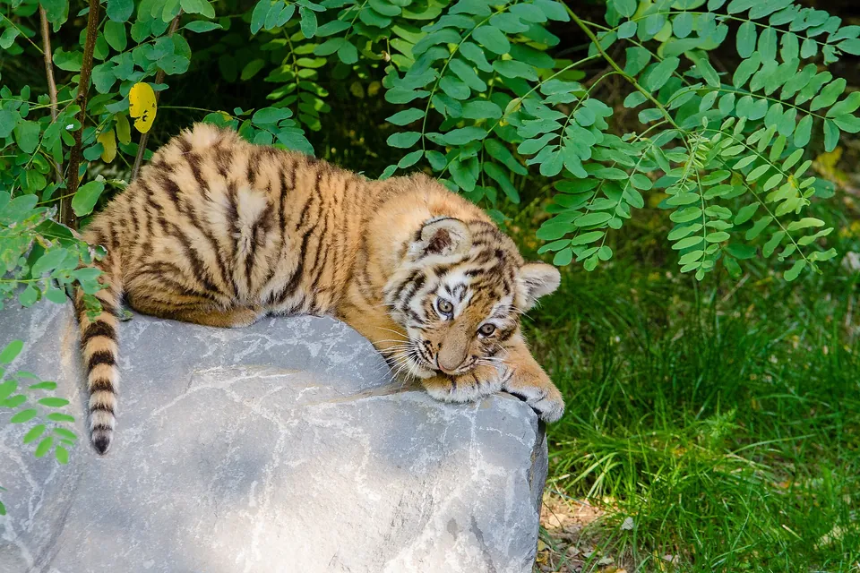
BigCatWise is a free, plain English guide to the world's big cats. It covers what each species looks like, how it hunts and lives, where it is found and how it is faring in the wild, with sources from the IUCN Cat Specialist Group, leading zoos, conservation groups and peer reviewed research.
Compare all six big cats Which big cat is it? Play big cat games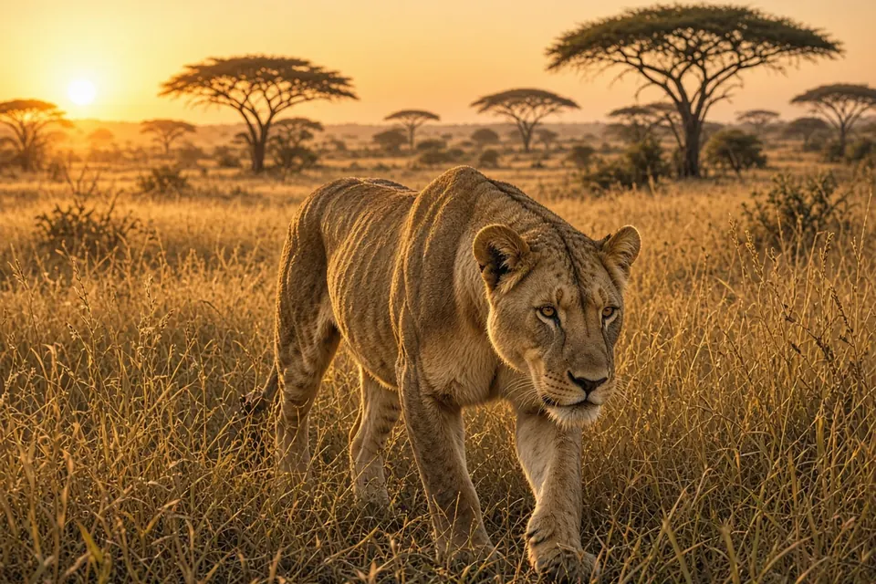
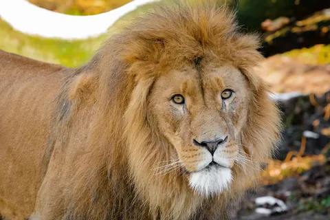
Lion
The only social big cat
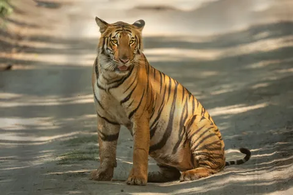
Tiger
The largest cat on Earth
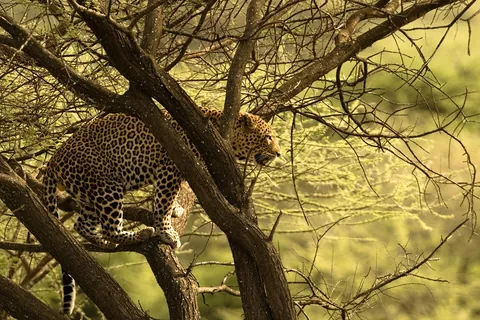
Leopard
The most widespread big cat
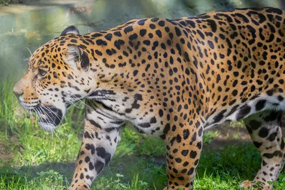
Jaguar
Big cat of the Americas
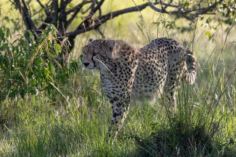
Cheetah
The fastest land animal
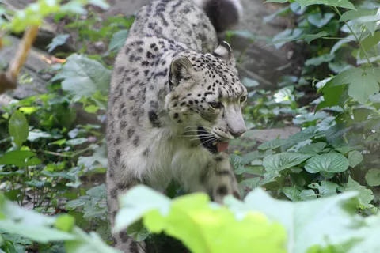
Snow leopard
Ghost of the mountains
Which big cat is it?
ID guide and big cats by region
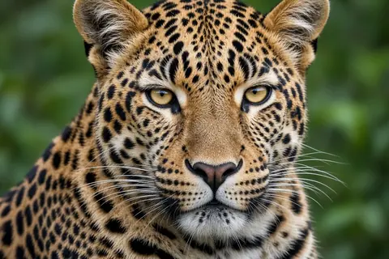
Compare all six
Size, range, status, numbers
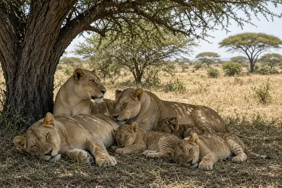
Behavior
Hunting, prides, roaring
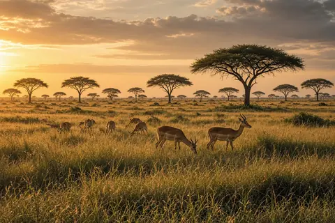
Habitats
Where each species lives
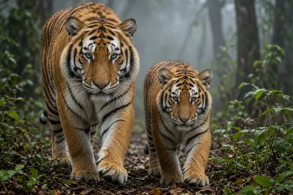
Conservation
Threats and what helps
Big cat games
Three free fact based games
For teachers
Free printables and lesson plans
Research
The papers behind our facts
FAQ and myths
Quick answers
Glossary
Terms explained
Blog
Answers to big cat questions
Big cats at a glance
- The tiger is the largest cat, at up to about 325 kg, and every tiger's stripes are unique.
- The lion is the only big cat that lives in groups, called prides.
- The leopard has the widest range, across Africa and Asia.
- The jaguar is the only big cat in the Americas and kills prey with a skull piercing bite.
- The cheetah is the fastest land animal; wild cheetahs have been measured at 93 km/h.
- The snow leopard lives at 3,000 to 5,000 m and cannot roar.
- All six are listed on the IUCN Red List as Near Threatened or worse. See conservation.
Latest from the blog
- Which big cats can roar?
- Leopard vs jaguar vs cheetah
- How fast is a cheetah?
- Why do tigers have stripes?
- How many big cats are left in the wild?
- Why do lions live in prides?
- How big is a tiger's territory?
- Why do leopards drag their kills into trees?
- What do snow leopards eat?
- Do jaguars hunt in water?
- Why do male lions have manes?
- Never enter a tiger enclosure: lessons from Yorkshire Wildlife Park
- Do cheetahs abandon hunts because they overheat?
- Are tigers nocturnal?
- Can leopards live near people?
- Why do so few cheetah cubs survive?
- Why do snow leopards have such low genetic diversity?
- How often do lion hunts succeed?
- What do lions eat?
- How do cheetahs live alongside lions and hyenas?
- Why do male lions kill cubs?
- What do tigers eat?
- What do jaguars eat?